| 3. s = 1 | 4. 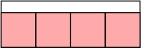 s = 4/3 = 1.333+ | 5. 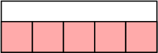 s = 5/3 = 1.666+ | 6. 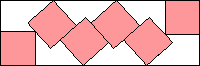 s = 1.913+ (MM) |
12. s = 2 | 14. 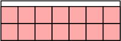 s = 7/3 = 2.333+ | 15. 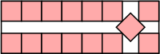 s = (9 + √2)/4 = 2.603+ | 16. 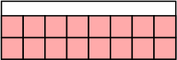 s = 8/3 = 2.666+ |
| 17. 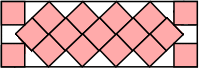 s = 2.799+ | 18. 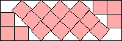 s = 2.876+ (JD) | 19. 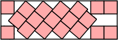 s = 2.930+ | 20. 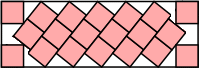 s = 2.968+ |
| 27. 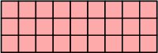 s = 3 | 30. s = 10/3 = 3.333+ | 31. 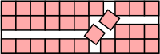 s = 18/5 = 3.600 | 33. 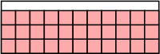 s = 11/3 = 3.666+ |
| 34. 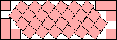 s = 3.772+ (JD) | 35. 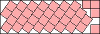 s = 3.827+ (JD) | 36. 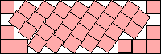 s = 3.850+ (JD) | 37. 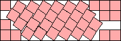 s = 3.900+ (JD) |
| 38. 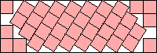 s = 3.924+ (JD) | 39. 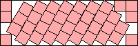 s = 3.972+ (JD) |